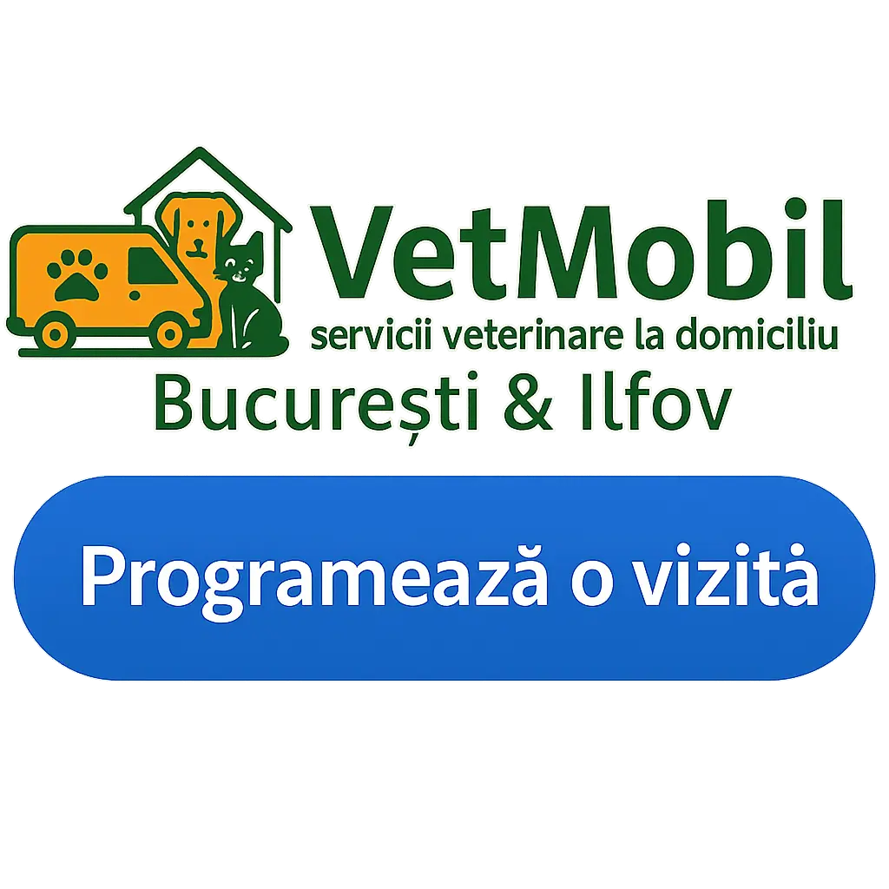

Veterinar la domiciliu în București și Ilfov
Consultații, vaccinări și urgențe pentru câini și pisici, direct la tine acasă. Fără stres pentru animal. Prețuri transparente.
Bine ai venit la VetMobil
Veterinar la domiciliu în București & Ilfov. Fără stres pentru animal, programare flexibilă și prețuri transparente.
VetMobil este un serviciu modern de veterinar la domiciliu în București și Ilfov, creat pentru a reduce stresul animalelor și pentru a oferi proprietarilor soluții rapide și eficiente. Ne adresăm atât câinilor, cât și pisicilor, indiferent de vârstă sau rasă.
În loc să pierzi timp pe drumuri sau în săli de așteptare, echipa noastră vine direct la tine acasă, pregătită cu instrumentar medical pentru consultații, vaccinări, tratamente și urgențe. Totul într-un mediu familiar pentru animal, unde se simte în siguranță.
Transparența și profesionalismul sunt valori de bază: vei ști dinainte care sunt costurile, vei primi recomandări clare și vei avea sprijin pe WhatsApp pentru monitorizare și follow-up.
- Consultanță rapidă pe WhatsApp sau telefon
- Intervenții la domiciliu când este sigur
- Investigații și proceduri — acasă când se poate, la clinică atunci când e nevoie
Serviciile noastre
Consultații și tratamente
Vizite medicale de bază, diagnostic și tratamente la domiciliu.
Consultațiile veterinare la domiciliu includ anamneză, examinare completă și tratamente de bază. Scopul nostru este să oferim îngrijire medicală rapidă și sigură, reducând stresul și deplasările inutile pentru animal.
Vaccinări pentru câini și pisici
Vaccinuri esențiale administrate în siguranță acasă.
Oferim vaccinuri pentru câini și pisici adaptate vârstei și istoricului medical. Carnetul de sănătate este completat pe loc, iar vaccinarea se desfășoară într-un cadru confortabil, acasă.
Urgențe veterinare
Asistență rapidă pentru situații care nu suportă amânare.
În caz de urgențe, intervenim prompt la domiciliu pentru stabilizare și tratamente rapide. Dacă situația necesită investigații suplimentare, îți recomandăm imediat cea mai bună soluție într-o clinică de gardă.
Eutanasie și incinerare
Proceduri umane, cu empatie și respect pentru animal.
În momentele dificile, oferim servicii de eutanasie veterinară la domiciliu, realizate cu respect și compasiune. Asigurăm și servicii de incinerare, individuală sau colectivă, pentru a onora memoria companionului tău.
Cum lucrăm
Procesul VetMobil este gândit să fie cât mai simplu și clar pentru proprietari. De la primul contact pe WhatsApp sau telefon, până la consultația efectivă și monitorizarea ulterioară, urmărim să îți oferim servicii veterinare rapide, corecte și transparente.
1) Contact & triere
Ne scrii pe WhatsApp sau suni. În 1–2 minute trecem prin simptome, istoricul scurt și adresa. Dacă e urgență majoră, te ghidăm direct către clinică non-stop.
2) Estimare transparentă
Primești interval de cost (act + materiale + deplasare) și ora de sosire. Confirmăm în scris.
3) Vizita la domiciliu
Ajungem pregătiți: examinare completă, teste rapide dacă e cazul, tratamente/perfuzii pe loc când e sigur. Minimalizăm stresul animalului.
4) Plan & follow-up
Primești recomandări scrise, rețetă (dacă e cazul) și check-in pe WhatsApp în 24–48h. Ajustăm tratamentul dacă e nevoie.
5) Plată & documente
Plătești cash/card/transfer. Emitem documentele necesare (ex. carnet, microcip & RECS).
Zone: București & Ilfov. Supliment pentru distanțe mai mari.